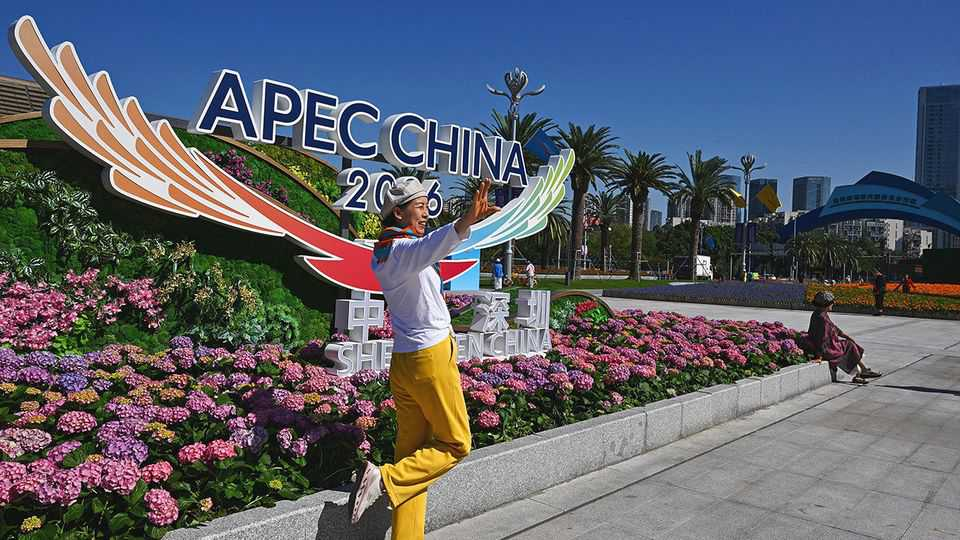

Can anyone fix the China-Japan relationship?
The two countries need a go-between. Donald Trump is not an ideal option

Nov 12th 2026
WHEN FUKUDA YASUO, a 90-year-old former prime minister of Japan, died last month, China’s supreme leader, Xi Jinping, sent condolences. Mr Fukuda had devoted much of his career to stabilising Sino-Japanese ties. He worked behind the scenes to calm Chinese anger in the early 2000s over the then prime minister’s visits to Yasukuni, the shrine in Tokyo that honours Japan’s war dead, including 14 class-A war criminals. In 2014, when relations had frozen again over the disputed Senkaku Islands, he convinced Mr Xi to meet then-prime minister Abe Shinzo at the Asia-Pacific (APEC) summit in Beijing that year.
Another APEC summit, this one in the southern Chinese city of Shenzhen next week, could be the setting for a similar ice-breaking meeting between Mr Xi and Takaichi Sanae, Japan’s current leader. Relations have been dire since Ms Takaichi suggested a year ago that Japan might respond with force to a Chinese attack on Taiwan. Chinese officials demanded that she should retract; she has not. Since then China has discouraged tourism, banned seafood imports, imposed tougher export controls on dual-use items, crucially including rare earths, and cut off most high-level government communication. Last December a Chinese jet is said to have locked its fire-control radar onto Japanese fighters; when Japan called its defence hotline with China, no one answered.
China’s animosity has become personal. Its state-controlled media slams Ms Takaichi as a “neo-militarist” because she is leading a big Japanese defence build-up in co-ordination with America (though it is in response to China’s many-times-greater expansion). Ms Takaichi has also long been outspoken about her belief that Japan is too apologetic about its past colonialism and wartime actions. She has not visited Yasukuni since becoming prime minister. But she still prayed to the shrine from a nearby car park in August, and sparked more Chinese rage when she sent a ritual offering in October.
Mr Fukuda was a “responsible statesman” with a “correct view of history,” Mr Xi said, adding that Japan’s leaders should “cherish the older generation’s hard work” and adhere to the four political documents signed between the two countries. That was a pointed admonition for Ms Takaichi, since these documents formally state that Japan “fully understands and respects” China’s position on Taiwan.
Ms Takaichi has insisted that her statements are consistent with Japan’s past policy on Taiwan. She has close ties to Taiwan’s ruling Democratic Progressive Party, which advocates Taiwanese self-determination, and flaunts it on social media: she posted 37 photos on Instagram of her visit to Taiwan in April 2025, months before she became prime minister. She also posted a photo of herself with Taiwan’s representative to APEC on X last year.
China has shown no signs of openness to a meeting at this year’s summit, though it has accepted several non-government Japanese delegations in recent months. The most notable was a group led by a former foreign minister, Iwaya Takeshi, who met China’s foreign minister and one of its vice-premiers in Beijing in September. But officials in Tokyo see the trip more as a Chinese attempt to exploit divisions within Japan than an invitation to reconcile, given that Mr Iwaya is part of an opposing faction to Ms Takaichi’s within the ruling party. “She hates him,” says one official.
Some Japanese officials bridle at the question of how to fix the Sino-Japanese relationship. Japan, they note, has not retaliated against any of China’s actions and remains open to dialogue. China’s message, complains one Japanese official, is: “Bend the knee”. There is no point in begging a bully to speak with you, he adds.
China has inflicted only limited damage over the past year. The number of Chinese tourists visiting Japan dropped by 56% year-on-year from January to September. But overall spending has been increasing, with the largest share coming from Taiwanese visitors. The seafood industry was cushioned by having just emerged from another Chinese ban in 2023 that pushed it to find different customers. And Ms Takaichi’s refusal to retract her remarks has been popular domestically; more than 40% of Japanese favour her tough stance.
The part of China’s campaign that may start to hurt soon is the restriction on exporting rare earths. Japan is said to be only months away from running out of some of these, including yttrium oxide, used in making jet engines and semiconductors. Exports of yttrium oxide to Japan have fallen by 98% in the first nine months of this year compared with last year. China’s temporary truce with America over rare-earth controls has pointedly excluded Japan.
Japanese officials hope that America will raise the problem with China when Mr Trump meets Mr Xi at APEC, as he did in September, in part because Japan is part of America’s defence and semiconductor supply chain. But China is unlikely to soften its industrial punishment. It wants to make an example of Japan and “warn everyone against repeating Takaichi’s mistake” on Taiwan, says Ren Xiao of Fudan University in Shanghai.
If only Japan had a go-between like Mr Fukuda. Alas, they must make do with Mr Trump, who is unlikely to have Japan’s interests at the top of his mind at the APEC summit when he meets Mr Xi. Russia has also been raising pressure on Japan, perhaps in support of China’s campaign, by detaining a Japanese journalist and seizing Japanese tobacco businesses in recent weeks. Japan, it seems, may have to brace for a deeper freeze. ■
For exclusive coverage of Asian politics, economics and security, sign up to Asia Bulletin, our weekly subscriber-only newsletter.